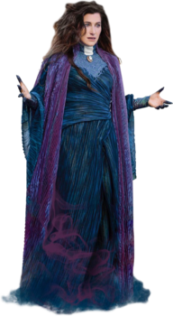
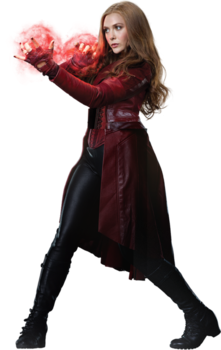
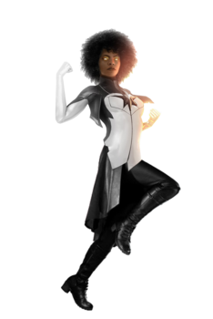
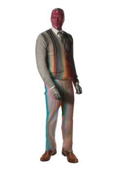

Agatha Harkness
Agatha Harkness is a witch from Salem, Massachusetts, who was accused of practicing dark magic by her own coven during the Salem witch trials. Three hundred years later in 2023, she sensed the presence of chaos magic radiating from the Hex in Westview, created by Wanda Maximoff.
Scarlet Witch
Wanda Maximoff aka the Scarlet Witch is a Transian Sorceress and the twin sister of the speedster Quicksilver. Wanda was trained by Agatha Harkness to become one of the most powerful magic wielders on Earth.
Monica Rambeau
Monica Rambeau was a lieutenant in the New Orleans harbor patrol, and operated as a cargo ship captain. Trying to prevent the creation of a dangerous weapon, Rambeau was exposed to extra-dimensional energy. As a result, she was thereafter able to convert her body to energy. The media dubbed her "Captain Marvel".
Vision
Vision is a synthezoid made from vibranium, created by Ultron with the help of Helen Cho, and given life by the powerful artifact known as the Mind Stone. The body was taken by the Avengers before Tony Stark and Bruce Banner proceeded to upload the remnants of Stark's personal A.I. J.A.R.V.I.S. into it.